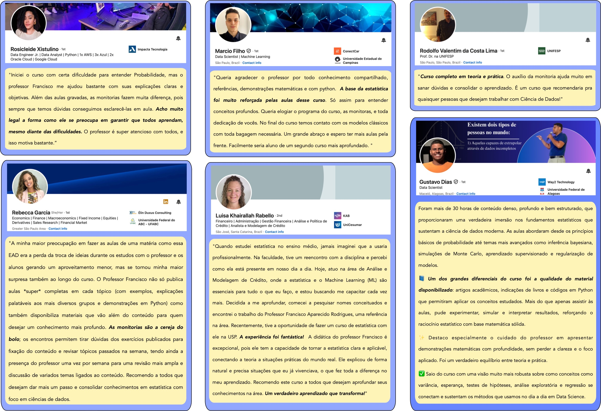

Curso de extensão universitária • 100% online
Probabilidade e Estatística: Teoria, Simulação e Dados
Curso 100% online voltado a profissionais que desejam se aprofundar nos conceitos fundamentais de probabilidade e estatística aplicados à ciência de dados, combinando rigor matemático e prática com simulações e análise de dados em Python.
+ 30h ao vivo
Sobre o curso
Curso voltado a profissionais que desejam se aprofundar nos conceitos fundamentais de probabilidade e estatística aplicados à ciência de dados. O curso é 100% online e combina aulas teóricas, com aprofundamento nos conceitos matemáticos, e atividades práticas, com simulações e análise de dados em Python.
- Aulas gravadas disponibilizadas às segundas, terças, quartas e quintas-feiras.
- Aulas teóricas com exercícios e notebooks em Python (mais de 20 notebooks).
- Foco em aplicações e análise de dados.
- Atividades ao vivo não obrigatórias, de segunda a sexta-feira, às 20h (sessões gravadas).
- Com aplicações e projetos de Ciência de Dados.
Programa
Fundamentos de Probabilidade
Fundamentos de probabilidade incluindo Teorema de Bayes, variáveis aleatórias, modelos probabilísticos discretos e contínuos, momentos estatísticos e distribuições, análise multivariada de dados, simulação de Monte Carlo, Lei dos Grandes Números e Teorema Central do Limite.
Inferência Estatística e Análise Exploratória de Dados
Inferência estatística abrangendo estimação pontual, intervalos de confiança, métodos de reamostragem (bootstrap), testes de hipóteses, valor-p, testes pareados, estatística de Kolmogorov–Smirnov, testes de normalidade e inferência bayesiana. Análise exploratória de dados.
Modelagem Estatística e Aprendizado Supervisionado
Construção de modelos de regressão e classificação, técnicas modernas de seleção e regularização de modelos, fundamentos da teoria da decisão bayesiana, regressão logística e tópicos avançados da Teoria do Aprendizado Estatístico, com aplicações em problemas reais de ciência de dados.

Conteúdo baseado em livro
O conteúdo do curso é baseado no livro “Probabilidade e Estatística: Teoria, simulação e dados”, de Francisco Rodrigues, que fundamenta a organização do programa, os exemplos, os exercícios e os notebooks em Python utilizados ao longo das aulas. Os alunos podem adquiri-lo no site da editora: UICLAP.
Sobre o docente

Francisco Rodrigues
Francisco Rodrigues é Professor de Sistemas Complexos e Ciência de Dados no Instituto de Ciências Matemáticas e de Computação (ICMC) da Universidade de São Paulo. Foi Leverhulme Visiting Professor na Universidade de Warwick (Reino Unido), no Institute of Mathematics, em 2018.
Em 2023 e 2024, foi incluído no grupo dos 2% de pesquisadores mais citados do mundo , nas áreas de Inteligência Artificial/Processamento de Imagens e Física/Astronomia. Em 2025, recebeu o prêmio Friedrich Wilhelm Bessel Research Award, concedido pela Fundação Alexander von Humboldt.
É autor de mais de 160 artigos científicos e de um livro publicado pela Springer sobre redes complexas. Desenvolve pesquisas em modelagem epidemiológica, inferência causal, aprendizado de máquina, redes complexas e sistemas dinâmicos, com aplicações em diversas áreas científicas.
Mantém um canal no YouTube com mais de 16 mil inscritos e 500 mil visualizações, no qual disponibiliza videoaulas sobre estatística, probabilidade, ciência de dados, redes complexas e processos estocásticos. Foi paraninfo, patrono e professor homenageado de diversas turmas de formandos do ICMC.
Como garantir sua vaga
- Inscrição no sistema Apolo (USP)
-
Pagamento via PIX (FAFQ) — R$ 690,00
Chave PIX: cursos.fafq4@gmail.com
Fundação de Apoio à Física e à Química (FAFQ)
⚠ O pagamento garante a vaga.
Após o pagamento, envie o comprovante para:
probest@icmc.usp.br
Depoimentos de alunos
Relatos de estudantes e profissionais que já participaram das edições anteriores do curso.

Vagas regulares
Fundação de Apoio à Física e à Química (FAFQ)
Bolsas integrais
- Inscrições até 30/09/2026
- Envie documentos comprobatórios de renda.
- Não é necessário realizar o pagamento para concorrer.
- Divulgação dos contemplados: 01/10/2026
Perguntas frequentes
Qual é o conteúdo?
O curso é dividido em três partes:
- 1 – Fundamentos de Probabilidade — do Teorema de Bayes ao Teorema Central do Limite.
- 2 – Inferência Estatística — da estimação por verossimilhança à inferência bayesiana.
- 3 – Modelagem Estatística e Aprendizado Supervisionado — de modelos de regressão e classificação a tópicos da Teoria do Aprendizado Estatístico.
Todo o conteúdo é trabalhado na teoria e na prática, com dezenas de notebooks em Python disponibilizados a cada aula.
Quais são os pré-requisitos?
O curso possui componentes teóricos e práticos. Não é obrigatório ter conhecimento prévio em Python: materiais introdutórios serão disponibilizados para apoiar quem está começando. A base matemática necessária será desenvolvida ao longo do curso. Em edições anteriores, participaram com sucesso profissionais de áreas não exatas, como Direito, Jornalismo e Biologia.
Como serão as aulas?
Aulas gravadas (assíncronas) disponibilizadas semanalmente, para assistir quando quiser. Aulas ao vivo de monitoria e revisão. Todas as sessões ao vivo serão gravadas e disponibilizadas posteriormente.
Horário das aulas ao vivo: 20h (horário de Brasília).
Os encontros ao vivo são obrigatórios?
Não. O curso pode ser realizado de forma totalmente assíncrona. O estudante precisará apenas acessar a plataforma para confirmar sua presença.
Como são as avaliações?
Não há avaliações. Há exercícios para prática e fixação do conteúdo.
Como o conteúdo será ministrado?
Combinação de fundamentos teóricos com prática intensiva em Python, incluindo desenvolvimento de códigos para simulação e análise de dados.
Qual material estará disponível aos alunos?
- Links para as aulas (gravadas e ao vivo)
- Notebooks em Python
- Slides das aulas
- Listas de exercícios resolvidos
- Materiais complementares (livros, artigos e tutoriais)
O curso tem certificado?
Sim. O certificado é emitido pela USP ao final do curso.
É possível obter Nota Fiscal?
Sim. A FAFQ pode emitir Nota Fiscal mediante solicitação. Caso sua empresa ofereça verba para treinamento, a NF pode ser emitida em nome da empresa. Em caso de dúvidas, escreva para probest@icmc.usp.br.
Caso o pagamento seja feito e não haja mais vagas, o valor é devolvido?
Sim. Caso se encerre o número de vagas, o valor é devolvido integralmente. Não há taxas de inscrição ou matrícula.
Pessoas do exterior podem participar?
Sim. O curso é aberto a qualquer pessoa que fale português. Em edições anteriores, tivemos alunos de diversos países, como Bolívia, Peru, Moçambique, Angola e Portugal, o que reforça o caráter internacional e inclusivo da formação. Em caso de dúvidas, escreva para probest@icmc.usp.br
As aulas são síncronas? Alguma hora específica?
O curso é majoritariamente assíncrono: todo o conteúdo é gravado e pode ser assistido no seu próprio ritmo. Além disso, há encontros ao vivo para esclarecimento de dúvidas, realizados de segunda a quinta-feira, sempre às 20h (horário de Brasília). Às sextas-feiras, ocorre uma aula ao vivo com o docente responsável, dedicada à revisão e discussão de todo o conteúdo da semana. Os encontros ao vivo são gravados e a presença não é obrigatória.
Quais bibliotecas Python são utilizadas durante o curso?
O curso utiliza as principais bibliotecas do ecossistema científico em Python, amplamente empregadas em pesquisa e na indústria, incluindo NumPy, SciPy, pandas, scikit-learn, random e PyMC. Ao longo do curso, essas bibliotecas são exploradas em dezenas de notebooks, cobrindo desde simulação e análise de dados até modelagem estatística, aprendizado de máquina e inferência bayesiana.
É preciso saber cálculo diferencial e integral?
Não. Os conceitos necessários podem ser aprendidos ao longo do curso. Algumas semanas antes do início das aulas, serão disponibilizados materiais preparatórios de estudo e revisão, para que todos possam acompanhar o conteúdo com tranquilidade.
Preciso saber programar?
Não. O curso foi estruturado de modo que seja possível aprender a utilizar Python ao longo das aulas. Algumas semanas antes do início do curso, serão disponibilizados materiais preparatórios para estudo e revisão, permitindo que mesmo iniciantes acompanhem o conteúdo com tranquilidade.
O certificado é emitido pela USP?
Sim. O certificado é emitido pela Universidade de São Paulo (USP). Ao final do curso, os alunos aprovados receberão o certificado por e-mail.
Qual é o valor do curso e como fazer o pagamento?
O valor total do curso é R$ 690,00. O pagamento é realizado via PIX
Chave PIX: cursos.fafq4@gmail.com
Fundação de Apoio à Física e à Química (FAFQ)
Caso o pagamento seja efetuado após o preenchimento das vagas, o valor será devolvido integralmente.
Quem não conseguir a bolsa ainda pode se inscrever como pagante?
Sim. Caso o candidato não seja contemplado com a bolsa, ele poderá realizar a inscrição como aluno pagante. A efetivação da matrícula, nesse caso, estará condicionada à disponibilidade de vagas regulares no curso.
Datas importantes
-
Período de inscrições:
01/09/2026 até 08/11/2026
(ou enquanto houver vagas)
Vagas limitadas! -
Bolsas:
Inscreva-se até 30/09/2026 -
Início do curso:
09/11/2026 -
Término do curso:
08/11/2026